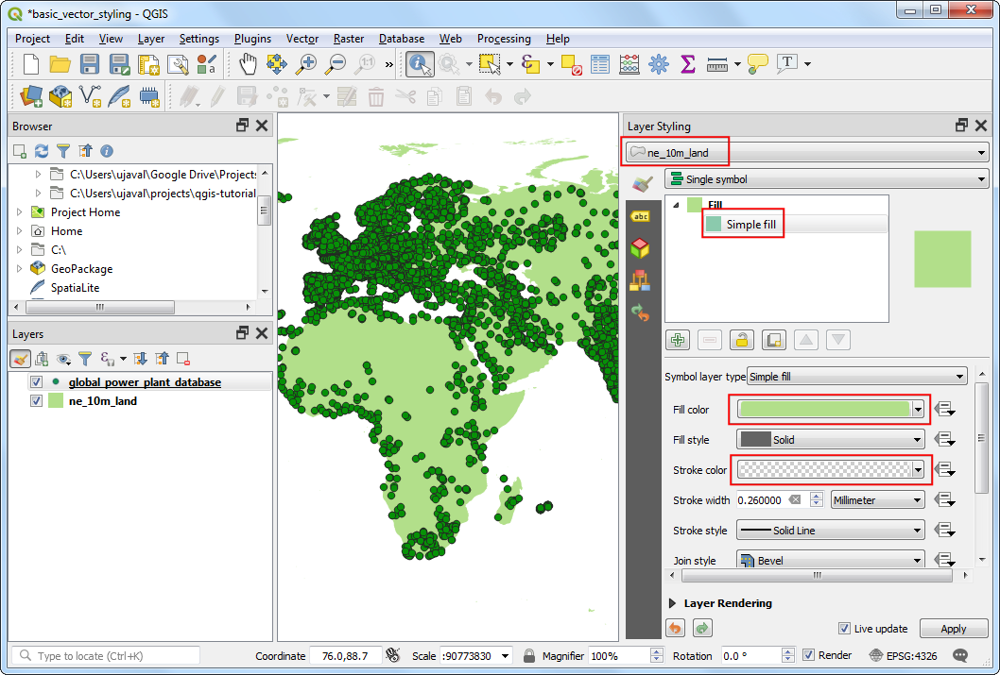
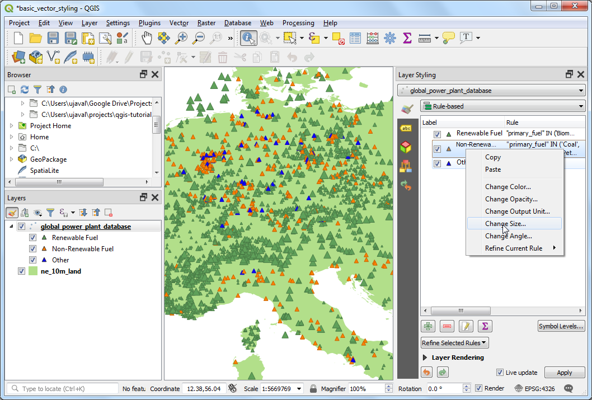

Basic Vector Styling (QGIS3)¶
To create a map, one has to style the GIS data and present it in a form that is visually informative. There are a large number of options available in QGIS to apply different types of symbology to the underlying data. In this tutorial, we will take a text file and apply different data visualization techniques to highlight spatial patterns in the data.
Overview of the task¶
We will take a CSV file containing the location of all power plants in the World and create a visualization showing distribution of renewable and non-renewable fuels used in these power plants.
Other skills you will learn¶
Use expressions to group multiple attribute values into a single category
Get the data¶
World Resources Institute has compiled a comprehensive, open source database of power plants around the World covering over 30000 plants. Download the The Global Power Plant Database from the WRI Open Data Portal.
Natural Earth has several global vector layers. Download the 10m Physical Vectors - Land containing Land polygons.
For convenience, you may directly download a copy of the above layers from below:
globalpowerplantdatabasev120.zip
Data Source [WRI] [NATURALEARTH]
Procedure¶
Unzip both the datasets to a folder on your computer. In the QGIS Browser Panel, locate the directory where you extracted the data. Expand the
ne_10m_landfolder and select thene_10m_land.shplayer. Drag the layer to the canvas.

You will get a new layer
ne_10m_landadded to the Layers panel. The global power plant database comes as a CSV file, so we will need to import it. Click the Open Data Source Manager button on the Data Source Toolbar. You can also use Ctrl + L keyboard shortcut.

In the Data Source Manager window, switch to the Delimited Text tab. Click the … button next to File name and browse to the directory where you extracted the
globalpowerplantdatabasev120.zipfile. Select theglobal_power_plant_database.csv. QGIS will auto detect the delimiter and geometry fields. Leave the Geometry CRS to the default value ofEPSG:4326 - WGS84. Click Add followed by Close.

A new layer
global_power_plant_databasewill be added to the Layers panel and you will see the points representing the power plants in the canvas. Now we are ready to style both these layers. Click the Open the Layer Styling panel button at the top of the Layers panel.

The Layer Styling panel will open on the right. Select the
ne_10m_landlayer first. This will be our base layer so we can keep the styling minimalistic so it is not distracting. ClickSimple filland scroll down. Select a Fill color as per your liking. Click the drop-down next to Stroke color and selectTransparent Stroke. This will set the outlines of the land polygons to be transparent. You will see the result of your selection applied immediately to the layer.

Next select the
global_power_plant_databaselayer. Click onSimple markerand scroll down. Pick a triangle marker.

Scroll up and select a Fill color of your liking. A useful cartographic technique is to choose a slightly darker version of the fill-color as the Stroke color. Rather than trying to pick that manually, QGIS provides an expression to control this more precisely. Click the Data defined override button and choose Edit.

Enter the following expression to set the color to be 30% darker shade than the fill color and click OK.
darker(@symbol_color, 130)
備註
Note that this expression is independent of the fill color you have chosen. You will see that this is immensely useful in the following steps where it automatically sets the border color based on the fill color provided.
You will notice that the Data defined override button next to Stroke color has turned yellow - indicating than this property is controlled by an override. A single symbol rendering of the power plants layer is not very useful. It doesn’t convey much information except the locations of the power plants. Let’s use a different renderer to make it more useful. Click the Symbology drop-down and select
Categorizedrenderer.

The
global_power_plant_databaselayer contains an attribute indicating the primary fuel used in each power plant. We can create a style where each unique fuel type is shown in a different color. Selectprimary_fuelas the Column. Click Classify. You will multiple categories appear and the map rendering change accordingly.

While a Categorized view is useful, this layer contains too-many categories for one to meaningfully interpret the map. A better approach would be to group certain type of fuel categories and reduce the number of classes. Let’s try to create 3 categories - Renewable fuel, Non-renewable fuel and Other. Select
Rule-basedrenderer. Select all but one rules by holding the Ctrl key and clicking on each row. Once selected, click the Remove selected rules button to delete them.

Select the remaining rule and click Edit current rule.

Enter
Renewable fuelas the Label. Click the Expression button next to Filter.

In the Expression String Builder dialog, enter the following expression and click OK. Here we are grouping multiple renewable energy categories into a single category.
"primary_fuel" IN ('Biomass', 'Geothermal', 'Hydro', 'Solar', 'Wind', 'Storage', 'Wave and Tidal')
備註
The types of fuel chosen for renewable vs. non-renewable categories is based on Wikipedia. There are alternate definitions and classifications that may not match what is chosen here.
Scroll down and click Simple marker. Choose an appropriate Fill color. Once done, click the Back button.

You will see a single rule being applied to the layer for the Renewable fuel category. Right-click the row and choose Copy. Right-click again and choose Paste.

A copy of the existing rule will be added. Select the newly added row and click Edit current rule.

Enter
Non-renewable fuelas the Label. Click the Expression button next to Filter.

In the Expression String Builder dialog, enter the following expression and click OK.
"primary_fuel" IN ('Coal', 'Gas', 'Nuclear', 'Oil', 'Petcoke')
Scroll down and click Simple marker. Choose an appropriate Fill color. Once done, click the Back button.

Repeat the Copy/Paste process to add a third rule. Select it and click Edit current rule.

Enter
Otheras the Label. Choose Else - Catch all for other features instead of a Filter. This will ensure that any category missed in the previous 2 rules, will be styled by this rule. Scroll down and click Simple marker. Choose an appropriate Fill color. Once done, click the Back button.

The re-categorization is complete now. You will see a much cleaner view that shows the distribution of renewable vs. non-renewable fuel sources used by power plants and their distribution across countries. This however doesn’t give a complete picture. We can add another variable to the styling. Rather than displaying all markers with uniform size, we can show the sizes proportional to the power generation capacity of each plant. This cartography technique is called Multivariate mapping. Right-click the
Renewable fuelrule and select Change Size.

Click the Data defined override button next to Size. Select Edit.

As the power generation capacity varies a lot among our dataset, an effective way to get a a small range for size is using the
log10function. You can experiment with different expressions to arrive at what works best for your preferred visualization. Enter the following expression and click OK.
log10("capacity_mw") + 1
Repeat the same process for other rules.

Once satisfied, you can close the Layer Styling panel.

Looking at our final visualization, you can immediately see the patterns in the dataset. For example, over Europe there are more power plants that use renewable energy source, but they are lower capacity than the plants that use non-renewable energy source.